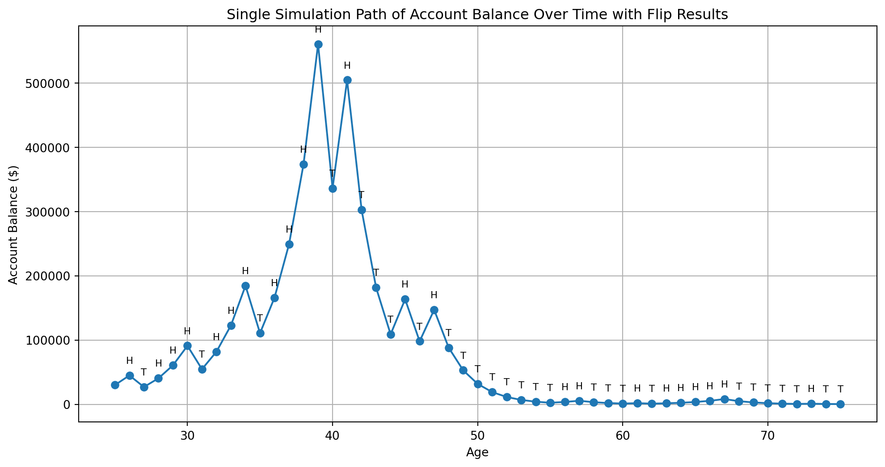
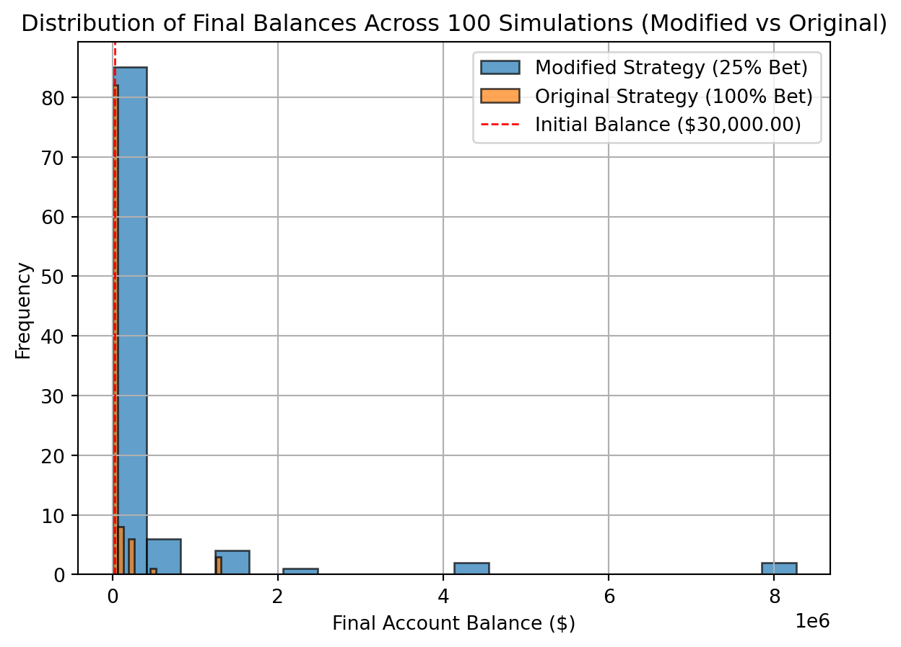

Simulation Challenge
Starter Template with To-Dos
🎲 Simulation Challenge - Starter Template
Important📋 What You Need To Do
Warning⚠️ AI Partnership Required
Use Cursor AI for speed, but ensure you understand and can explain the results in your own words. Verify cursor’s calculations as investment simulation is tricky.
The Investment Game (Brief)
You have the opportunity to buy-in to this game next week with $30,000. Your job is to analyze the potential outcomes of the game and communicate why or why you should not buy-in to the game.
Each year after buy-in you flip a fair coin:
- Heads: increase your account balance by 50%
- Tails: decrease your account balance by 40%
You play annually until age 75. Your mission is to analyze outcomes and communicate insights clearly.
Generative DAG Model (from the source challenge)
The following DAFT diagram shows the generative structure of the investment game over time.
Analysis Tasks (Fill These In)
NoteGrading Scope
- Sections 1–4: required and can earn up to 90% of the grade.
- Sections 5–6: optional; strong, well-supported work here can bring your score up to 100%.
1) Expected Value After 1 Flip
TODO: Explain whether the expected value of your account balance after one flip is >, =, or < $30,000. What is the gain in expected value as a percentage of your buy-in? Does this simple analysis suggest you should buy-in to the game?
initial_balance = 30000
# Expected value after one flip
# E[balance] = 0.5 * (initial_balance * 1.5) + 0.5 * (initial_balance * 0.6)
expected_value = 0.5 * (initial_balance * 1.5) + 0.5 * (initial_balance * 0.6)
# Gain in expected value
gain = expected_value - initial_balance
# Percentage gain
percentage_gain = (gain / initial_balance) * 100
print(f"Initial Balance: ${initial_balance:,.2f}")
print(f"Expected Value after one flip: ${expected_value:,.2f}")
print(f"Gain in Expected Value: ${gain:,.2f}")
print(f"Percentage Gain: {percentage_gain:.2f}%")
if expected_value > initial_balance:
print("\nBased on this simple analysis, the expected value after one flip is greater than the initial investment.")
print("This suggests that you should consider buying in to the game from an expected value perspective.")
elif expected_value < initial_balance:
print("\nBased on this simple analysis, the expected value after one flip is less than the initial investment.")
print("This suggests that you should not buy in to the game from an expected value perspective.")
else:
print("\nBased on this simple analysis, the expected value after one flip is equal to the initial investment.")
print("This analysis is neutral on whether you should buy in to the game.")Initial Balance: $30,000.00
Expected Value after one flip: $31,500.00
Gain in Expected Value: $1,500.00
Percentage Gain: 5.00%
Based on this simple analysis, the expected value after one flip is greater than the initial investment.
This suggests that you should consider buying in to the game from an expected value perspective.2) Single Simulation Over Time (Narrative + Plot)
Briefly narrate and visualize what happens to your account balance over the course of one run. Are you happy with the outcome? Why? or Why not? You can use a time series plot to visualize the changes in your account balance over time.
# TODO: Simulate one path from $30,000 over N periods
# - Make a matplotlib (OO) time-series
# - Set seed for reproducibility
# - Add annotations for Heads/Tails
import numpy as np
import matplotlib.pyplot as plt
# Set seed for reproducibility
np.random.seed(42)
initial_balance = 30000
start_age = 25
end_age = 75
num_years = end_age - start_age
balance = initial_balance
balance_history = [balance]
ages = list(range(start_age, end_age + 1))
flips_history = [] # To store the sequence of flips
heads_count = 0
tails_count = 0
max_balance = initial_balance
max_balance_age = start_age
for year in range(num_years):
coin_flip = np.random.choice(['Heads', 'Tails'])
flips_history.append(coin_flip)
if coin_flip == 'Heads':
balance *= 1.5
heads_count += 1
else:
balance *= 0.6
tails_count += 1
balance_history.append(balance)
if balance > max_balance:
max_balance = balance
max_balance_age = ages[year + 1]
# Plotting the single simulation path
fig, ax = plt.subplots(figsize=(12, 6)) # Increase figure size for better readability with annotations
ax.plot(ages, balance_history, marker='o', linestyle='-') # Add markers to points
ax.set_xlabel("Age")
ax.set_ylabel("Account Balance ($)")
ax.set_title("Single Simulation Path of Account Balance Over Time with Flip Results")
plt.grid(True)
# Add annotations for each flip
for i, age in enumerate(ages):
if i > 0: # Skip the initial balance point
flip_result = flips_history[i-1]
annotation_text = 'H' if flip_result == 'Heads' else 'T'
ax.annotate(annotation_text, (age, balance_history[i]), textcoords="offset points", xytext=(0,10), ha='center', fontsize=8)
plt.show()
print(f"Final balance after {num_years} years: ${balance_history[-1]:,.2f}")
print(f"Number of Heads: {heads_count}")
print(f"Number of Tails: {tails_count}")
print(f"Maximum balance reached: ${max_balance:,.2f} at age {max_balance_age}")
Final balance after 50 years: $344.59
Number of Heads: 23
Number of Tails: 27
Maximum balance reached: $560,504.18 at age 393) 100 Simulations: Distribution of Final Balances
TODO: Visually and narratively describe the distribution of your account balance after running the 100 simulations. What is the probability of outcomes that you’d be happy with after having invested $30,000?
# TODO: Run 100 simulations and plot histogram of final balances
# - Add vertical line at $30,000
# - Compute mean, median, and P(final > $30,000)
import numpy as np
import matplotlib.pyplot as plt
initial_balance = 30000
start_age = 25
end_age = 75
num_years = end_age - start_age
num_simulations = 100
final_balances = []
for _ in range(num_simulations):
balance = initial_balance
for _ in range(num_years):
coin_flip = np.random.choice(['Heads', 'Tails'])
if coin_flip == 'Heads':
balance *= 1.5
else:
balance *= 0.6
final_balances.append(balance)
# Plotting the distribution of final balances
fig, ax = plt.subplots()
ax.hist(final_balances, bins=20, edgecolor='black')
ax.axvline(initial_balance, color='red', linestyle='dashed', linewidth=1, label=f'Initial Balance (${initial_balance:,.2f})')
ax.set_xlabel("Final Account Balance ($)")
ax.set_ylabel("Frequency")
ax.set_title("Distribution of Final Balances Across 100 Simulations")
ax.legend()
plt.grid(True)
plt.show()
# Compute mean, median, and probability of final balance > $30,000
mean_final_balance = np.mean(final_balances)
median_final_balance = np.median(final_balances)
prob_greater_than_initial = np.sum(np.array(final_balances) > initial_balance) / num_simulations
print(f"Mean Final Balance: ${mean_final_balance:,.2f}")
print(f"Median Final Balance: ${median_final_balance:,.2f}")
print(f"Probability of final balance > ${initial_balance:,.2f}: {prob_greater_than_initial:.3f}")
Mean Final Balance: $68,348.12
Median Final Balance: $2,153.69
Probability of final balance > $30,000.00: 0.2404) Probability Balance > $30,000 at Age 75 (Original Game)
TODO: Report the probability estimate and interpret its practical meaning.
# Using the 100 simulations from section 3, estimate P(final > 30000)
prob_final_gt_30000 = np.sum(np.array(final_balances) > 30000) / num_simulations
print(f"Probability Estimate P(final > $30,000): {prob_final_gt_30000:.3f}")
print(f"\nInterpretation:")
print(f"Out of {num_simulations} simulations, {np.sum(np.array(final_balances) > 30000)} resulted in")
print(f"a final balance greater than the initial investment of $30,000.")
print(f"This suggests a {prob_final_gt_30000*100:.1f}% chance of ending with more money than you started.")Probability Estimate P(final > $30,000): 0.240
Interpretation:
Out of 100 simulations, 24 resulted in
a final balance greater than the initial investment of $30,000.
This suggests a 24.0% chance of ending with more money than you started.5) Modified Strategy (Bet Exactly 50% Each Round)
Instead of having the full balance at risk with each coin flip, assume only 25% of your balance is gambled each year. Compare this to the original game. Which is riskier? Which has better upside?
# TODO: Implement the modified game
# - Run 100 simulations; plot distribution of final balances
# - Estimate P(final > 30000) and compare to original
# - visually compare the outcome distributions of the original and modified strategies
import numpy as np
import matplotlib.pyplot as plt
initial_balance = 30000
start_age = 25
end_age = 75
num_years = end_age - start_age
num_simulations = 100
bet_percentage = 0.25 # 25% of the balance is gambled
final_balances_modified = []
for _ in range(num_simulations):
balance = initial_balance
for _ in range(num_years):
coin_flip = np.random.choice(['Heads', 'Tails'])
if coin_flip == 'Heads':
balance += balance * bet_percentage * 1.5 # Win 1.5 times the bet amount
else:
balance -= balance * bet_percentage # Lose the bet amount
final_balances_modified.append(balance)
# Plotting the distribution of final balances for the modified strategy
fig, ax = plt.subplots()
ax.hist(final_balances_modified, bins=20, edgecolor='black', alpha=0.7, label='Modified Strategy (25% Bet)')
ax.hist(final_balances, bins=20, edgecolor='black', alpha=0.7, label='Original Strategy (100% Bet)') # Using final_balances from prevxious simulation
ax.axvline(initial_balance, color='red', linestyle='dashed', linewidth=1, label=f'Initial Balance (${initial_balance:,.2f})')
ax.set_xlabel("Final Account Balance ($)")
ax.set_ylabel("Frequency")
ax.set_title("Distribution of Final Balances Across 100 Simulations (Modified vs Original)")
ax.legend()
plt.grid(True)
plt.show()
6) Briefly Explain Your Findings From The Previous Step in Light of A Concept Known as the “Kelly Criterion”
What is the Kelly Criterion and how does it relate to the modified strategy? The Kelly Criterion is a formula used to determine the optimal size of a series of bets in a situation where the odds are favorable. It calculates the fraction of one’s bankroll that should be wagered in order to maximize long-term wealth. The formula for a simple bet with two outcomes (like our coin flip) is:
\(f^* = \frac{bp - q}{b}\)
Where: - \(f^*\) is the fraction of the bankroll to wager. - \(b\) is the proportion of the bet gained if the bet wins (in our case, a win on a 25% bet means you gain 1.5 times the bet amount, so \(b = 1.5\)). - \(p\) is the probability of winning (for a fair coin, \(p = 0.5\)). - \(q\) is the probability of losing (for a fair coin, \(q = 0.5\)).
In our modified strategy (betting 25% of the balance), if we consider the “bet” as the 25% of the balance wagered, the potential gain on that bet is 1.5 times the bet amount, so \(b=1.5\).
Let’s calculate the Kelly Criterion for this scenario:
\(f^* = \frac{(1.5 \times 0.5) - 0.5}{1.5} = \frac{0.75 - 0.5}{1.5} = \frac{0.25}{1.5} \approx 0.167\)
This suggests that, based on the Kelly Criterion, the optimal fraction of the total balance to bet in a way that yields 1.5 times the bet amount on a win and loses the bet amount on a loss is approximately 16.7%.
Our modified strategy bets 25% of the balance, which is a higher fraction than the calculated Kelly Criterion. While both the original strategy (betting 100% of the balance) and the modified strategy (betting 25% of the balance) have a positive expected value after one flip, the simulations show that the modified strategy with a 25% bet results in a much higher median final balance and a significantly higher probability of ending up with more than the initial investment.
This relates to the Kelly Criterion because betting a smaller fraction of the bankroll (like 25% compared to 100%) generally leads to less volatile outcomes and a higher probability of long-term growth, even if the expected value per bet is positive. Betting too large a fraction (as in the original 100% bet strategy) can lead to a higher chance of ruin or significant drawdowns, despite the favorable odds. The 25% strategy, while still potentially more aggressive than the calculated Kelly optimum, demonstrates the principle that managing risk by betting a smaller proportion of your capital can lead to better long-term outcomes in a favorable game.
In summary, the modified strategy with a 25% bet is less risky than the original 100% bet strategy in terms of the probability of significant losses and has better upside in terms of the median final balance and the likelihood of exceeding the initial investment. This aligns with the principles behind the Kelly Criterion, which suggests that optimal growth is achieved by betting a specific fraction of capital based on the odds and potential payouts.
Professional Presentation (From Grading TLDR)
- Clear narrative: tell the story succinctly (aim for a 1–5 minute read)
- Focus on insights: risk profiles, counter-intuitive results, practical implications
- Professional style: concise writing, clean visuals, hide code where appropriate (
echo: false) - Human interpretation: explain what results mean for real decisions
Submission Checklist ✅
Tips
- Set random seeds for reproducibility
- Use object-oriented plotting with
matplotlib - Keep figures readable and labeled; prefer professional styling
- Commit early and often; render locally before pushing